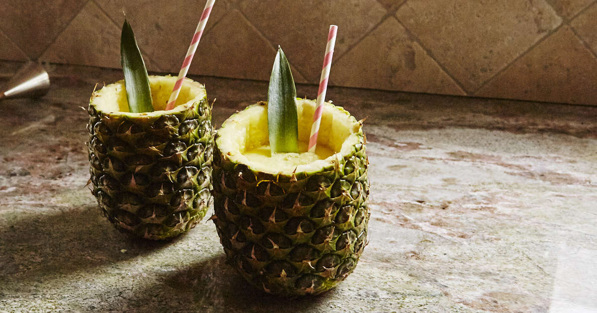
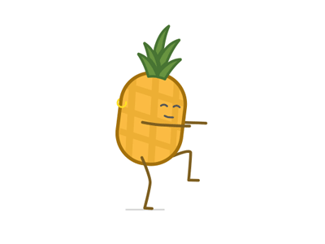

Web livro de receitas
Caipirinha de abacaxi

Ingredientes:
2 abacaxis maduro e doces
Açúcar
1 litro de vodka
Gelo
Modo de preparo (20 min):
- Descasque um dos dois abacaxis e corte em cubinhos.
- No liquidificador coloque metade dos cubinhos de abacaxi, 1 copo de vodka (200 ml), 1/2 litro de água e 1 e 1/2 xícaras de açúcar.
- Bata bem e se possível passe o liquido em uma peneira.
-
- Com o outro abacaxi , corte o miolo sem abri-lo, para isso tire a tampinha do abacaxi e com uma colher tire o miolo
- Coloque então um o gelo em cubo o restante dos cubos do abacaxi.
-
- Encha seu abacaxi sempre que acabar a bebida dentro.

Sirva-se
Serve até 8 pessoas
Proxima pagina